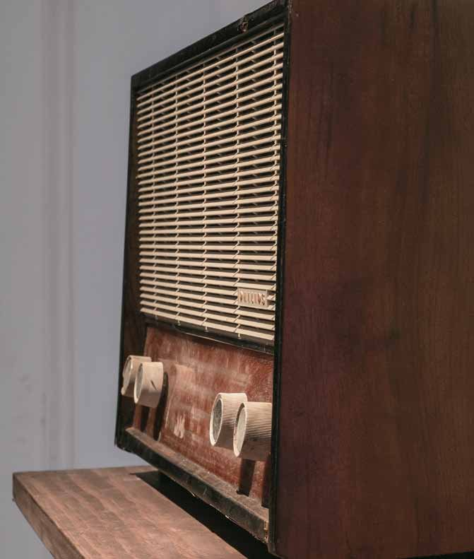

O estrangeiro
Registro sonoro em preparação.
Móvel de vinte gavetas com alto-falantes que reproduzem gravações caseiras de viagens. Casa de Cultura Laura Alvim, Rio de Janeiro, 2013.
- Materiais
- Móvel, alto-falantes, gravações caseiras
- Dimensões
- 141 × 82 × 60 cm
- Local
- Casa de Cultura Laura Alvim, Rio de Janeiro
- Exposição
- Sonar (2013)

